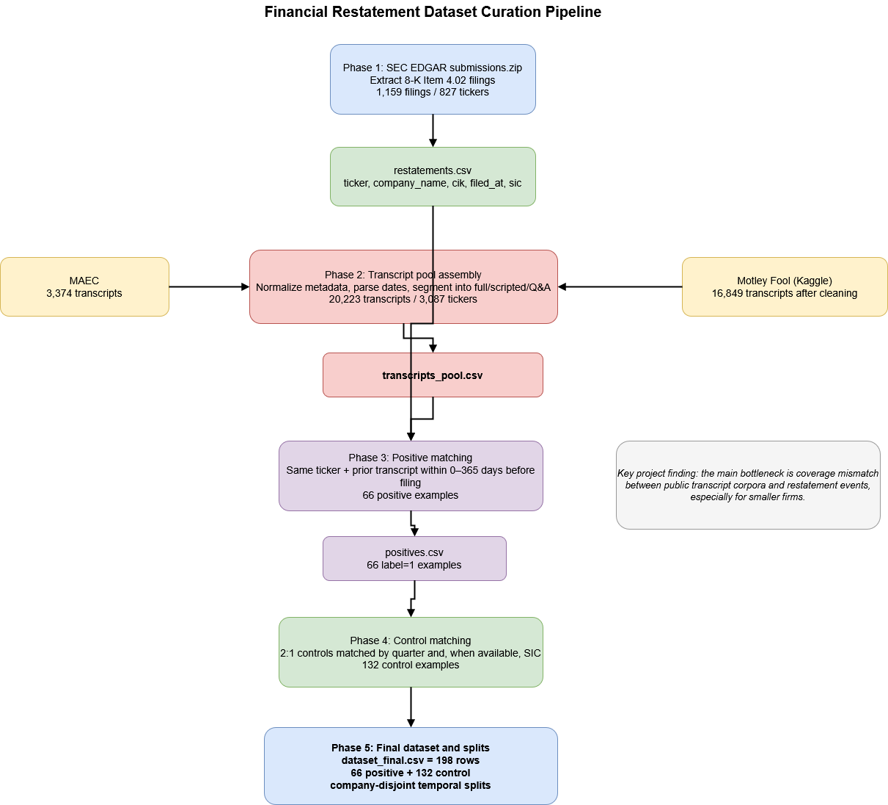

Linguistic Precursors to Financial Restatements: A Multi-Model NLP Analysis of Earnings Call Transcripts
Spring 2026 CSCI 5541 NLP: Class Project - University of Minnesota
Lexicon Labs
Shivank Sapra
Bilal Ahmed
Ahmet efe
Shivank Sapra
Bilal Ahmed
Ahmet efe
We study whether corporate executives' language on quarterly earnings call transcripts contains detectable linguistic signals predictive of subsequent financial restatements—a task entirely unstudied in NLP. We construct the first labeled benchmark linking SEC Form 8-K Item 4.02 restatement filings to earnings call transcripts within a pre-announcement clean window. We evaluate three model tiers: a Loughran–McDonald lexicon baseline, fine-tuned domain transformers (FinBERT, Longformer), and zero-/few-shot LLMs (GPT-4o, LLaMA 3, FinGPT). A central methodological contribution is the explicit modeling of scripted prepared remarks versus unscripted analyst Q&A sections grounded in cognitive load theory.
[We could create a diagram showing your pipeline: Transcripts -> Split into Scripted/Q&A -> Models (Lexicon, FinBERT, LLMs) -> Output: 8-K Restatement Prediction.]

If you need to explain more about your figure
What did you try to do? What problem did you try to solve?
We are trying to identify early warning signs of corporate misreporting by analyzing how executives communicate on earnings calls. When a firm files an SEC Form 8-K Item 4.02, it formally declares that prior financial statements are unreliable. We want to know if linguistic evasion, uncertainty, or excess hedging can be detected in transcripts 90-180 days before this announcement, particularly by comparing scripted remarks against unscripted analyst Q&A sessions.
How is it done today, and what are the limits of current practice?
Prior NLP work on earnings calls largely targets continuous, price-mediated outcomes like stock returns, volatility, and analyst sentiment. Predicting discrete regulatory events like financial restatements requires a qualitatively different class of linguistic features. Furthermore, previous deception research often treated the conference call as a single block of text rather than structurally separating pre-approved scripted remarks from spontaneous, high-cognitive-load Q&A sections.
Who cares? If you are successful, what difference will it make?
Restatement events impose significant investor losses, erode market trust, and precipitate regulatory enforcement. Currently, outside investors only learn of the problem at the time of the announcement. Detecting linguistic precursors would provide investors and regulators with a probabilistic screening aid to flag potential misconduct before the damage is fully realized.
What did you do exactly? How did you solve the problem?
We framed the problem as a binary classification task at the call level. We constructed a dataset linking SEC EDGAR filings to transcripts via the FinancialModelingPrep API, utilizing a 90-180 day clean window to prevent look-ahead bias. We then segmented the calls into scripted remarks and unscripted Q&A.
We evaluated three distinct model tiers:
What makes your approach new?
No published NLP paper has built a labeled benchmark linking earnings transcripts to restatement events under look-ahead-free conditions, applied fine-tuned transformers to this task, or modeled the scripted/unscripted call structure as an explicit experimental variable (testing our "Overcompensation Hypothesis").
How did you measure success? What experiments were used? What were the results, both quantitative and qualitative? Did you succeed? Did you fail? Why?
Nemo enim ipsam voluptatem quia voluptas sit aspernatur aut odit aut fugit, sed quia consequuntur magni dolores eos qui ratione voluptatem sequi nesciunt.
| Experiment | 1 | 2 | 3 |
|---|---|---|---|
| Sentence | Example 1 | Example 2 | Example 3 |
| Errors | error A, error B, error C | error C | error B |

What limitations does your model have?
Our primary limitation is label ambiguity: Form 8-K Item 4.02 captures both intentional manipulation and honest accounting errors. Therefore, our model learns pre-disclosure language patterns rather than fraud itself. Furthermore, transcript availability may be biased toward larger-cap firms, potentially limiting generalizability to smaller companies.
Does your work have potential harm or risk to our society?
A model flagging pre-restatement linguistic patterns could cause severe reputational harm to firms if treated as a definitive signal of fraud. To mitigate this, our findings must be treated strictly as an exploratory, probabilistic screening aid that requires human review. Furthermore, we acknowledge the risk of LLM hallucination in zero-shot classification, which we mitigate by logging and reviewing a stratified random sample of model rationales.